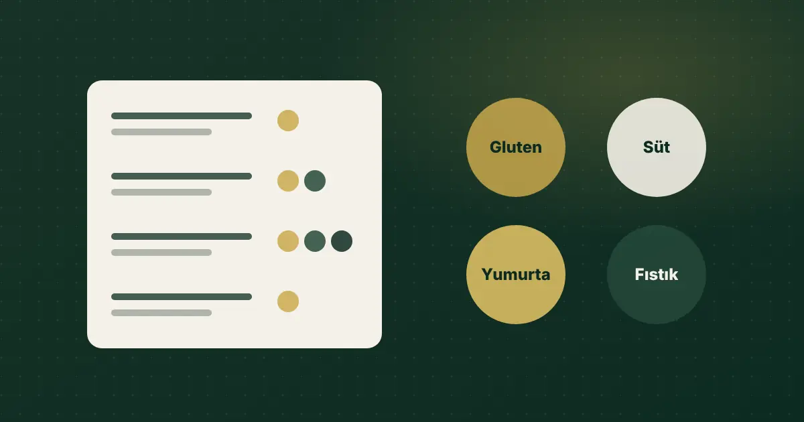

Restoran Menüsünde Alerjen Bilgisi: Neden Önemli, Nasıl Gösterilir?
Gıda alerjisi olan bir misafir için yanlış bilgi verilmiş bir tabak ciddi bir sağlık sorunudur. Alerjen bilgisini menüde açıkça göstermek hem misafiri hem işletmeyi korur.

Kısa cevap
Alerjen bilgisi, her ürünün hangi alerjenleri içerdiğinin menüde yazı ve simgeyle gösterilmesidir. Bilgi mutfakla birlikte reçeteden doğrulanmalı, çapraz bulaşma riski belirtilmeli ve garsonlar bu bilgiye hâkim olmalıdır. Dijital menüde alerjen tanımlandığında misafir, istemediği alerjeni içeren ürünleri filtreleyebilir.
Bu yazı genel bilgilendirme amaçlıdır; tıbbi ya da hukuki görüş değildir. İşletmeniz için güncel yükümlülükleri Tarım ve Orman Bakanlığı'nın ve Resmî Gazete'nin güncel metinlerinden doğrulayın.
Alerjen bilgisi neden bu kadar önemli?
Gıda alerjisi olan biri için tek bir yanlış bilgi, hafif bir rahatsızlıktan ciddi bir sağlık sorununa kadar sonuç doğurabilir. Misafir çoğu zaman garsona sorar; garson mutfağa sorar; mutfaktaki kişi de reçeteyi ezberden hatırlamaya çalışır. Zincirin herhangi bir halkasındaki hata misafire yansır.
Menüde yazılı ve doğrulanmış alerjen bilgisi bu zinciri kısaltır: misafir bilgiyi kendisi okur, garson aynı bilgiye bakar, mutfak bilgiyi bir kez doğru girer.
Mevzuat ne diyor?
Türkiye'de gıda bilgilerinin tüketiciye sunulması, Türk Gıda Kodeksi kapsamındaki etiketleme ve tüketiciyi bilgilendirme yönetmeliğiyle düzenlenir. Bu düzenleme alerjen bilgisini önemli bilgiler arasında sayar ve ambalajsız sunulan gıdalar için de tüketicinin bilgilendirilmesini öngörür. Avrupa Birliği'nde aynı konu 1169/2011 sayılı tüketiciyi gıda konusunda bilgilendirme tüzüğüyle düzenlenir ve 14 alerjen grubunu listeler.
Ayrıntılar ve işletmenize düşen somut yükümlülük zaman içinde değişebileceği için, güncel metni resmî kaynaklardan kontrol etmenizi öneririz.
14 temel alerjen grubu
AB tüzüğünün ekinde sayılan ve Türk mevzuatında da esas alınan alerjen grupları şunlardır:
| Alerjen | Menüde sık görüldüğü yerler |
|---|---|
| Gluten içeren tahıllar (buğday, arpa, çavdar, yulaf) | Ekmek, makarna, börek, pane, sos kıvamlaştırıcı |
| Süt ve süt ürünleri | Peynir, tereyağı, krema, yoğurt, tatlılar |
| Yumurta | Hamur işleri, mayonez, pane harcı, tatlılar |
| Yer fıstığı | Soslar, tatlılar, kavrulmuş garnitür |
| Sert kabuklu yemişler (fındık, ceviz, badem, antep fıstığı vb.) | Baklava, kadayıf, salata, pesto |
| Susam | Simit, tahin, humus, hamburger ekmeği |
| Balık | Balık yemekleri, bazı soslar |
| Kabuklular (karides, yengeç) | Deniz ürünleri, makarna |
| Yumuşakçalar (midye, kalamar) | Midye dolma, kalamar tava |
| Soya | Soslar, hazır karışımlar |
| Kereviz | Çorbalar, et suyu, salata |
| Hardal | Soslar, marinasyon, sandviç |
| Sülfitler | Kuru meyve, şarap, sirke |
| Acı bakla (lupin) | Bazı unlar ve hamur işleri |
Bilgiyi mutfakta doğru toplamak
- Reçeteden çalışın. Her ürünün bütün malzemelerini, soslar ve garnitürler dahil, yazılı hale getirin.
- Hazır ürünlerin etiketine bakın. Satın aldığınız sos, baharat karışımı ya da hamurun etiketinde alerjen bilgisi yazar.
- Çapraz bulaşmayı belirtin. Aynı fritözde pane ürün ve patates kızartılıyorsa, patatesin "gluten izi içerebilir" olarak belirtilmesi dürüst olandır.
- Değişiklikleri güncelleyin. Tedarikçi ya da reçete değiştiğinde alerjen bilgisi de değişebilir.
Menüde nasıl gösterilmeli?
- Simge ve yazı birlikte. Yalnızca simge kullanmak, simgeyi bilmeyen misafir için yetersizdir.
- Her ürünün yanında. Menünün sonundaki genel bir dipnot ("ürünlerimiz alerjen içerebilir") misafire hangi ürünün güvenli olduğunu söylemez.
- Misafirin dilinde. Turist misafir için alerjen bilgisi de çevrilmelidir. Bkz. çok dilli menü rehberi.
- "Glutensiz" gibi iddialarda dikkat. Çapraz bulaşma riski varsa bir ürünü kesin dille "glutensiz" diye sunmak yanıltıcı olabilir.
Dijital menüde alerjen filtresi
Basılı menüde alerjen bilgisini her ürünün altına sığdırmak zordur. Dijital menüde ürün detayında alerjenler simgeleriyle gösterilebilir; misafir de istemediği alerjeni seçip o alerjeni içeren ürünleri listeden çıkarabilir.
QR Menu Official'da alerjen tanımları ve Akıllı Filtreleme Temel paketten itibaren vardır. Filtre, yalnızca ürünlere girdiğiniz alerjen bilgisine dayanır; sistem bir ürünün içeriğini kendisi tahmin etmez. Misafir menüde "glutensiz" ya da "sütsüz" gibi bir arama yaptığında da, o alerjen tanımlıysa onu içermeyen ürünler listelenir.
Garsonun rolü
Yazılı bilgi garsonun yerini tutmaz. Alerjisini söyleyen misafiri mutfağa bildirmek, emin olunmayan bir soruda "kontrol edip geliyorum" demek ve tahminle cevap vermemek, ekibin her üyesinin bilmesi gereken kurallardır.
Alerjen filtresinin telefonda nasıl çalıştığını görün. Demo menüde filtre panelini açın.
Canlı Menüyü GörSık sorulan sorular
Restoranlarda alerjen bilgisi vermek zorunlu mu?
Türk Gıda Kodeksi kapsamındaki tüketiciyi bilgilendirme düzenlemesi alerjen bilgisini önemli bilgiler arasında sayar. İşletmenize düşen güncel yükümlülüğü Tarım ve Orman Bakanlığı ve Resmî Gazete kaynaklarından doğrulayın.
Kaç tane temel alerjen vardır?
AB'nin 1169/2011 sayılı tüzüğü 14 alerjen grubunu sayar: gluten içeren tahıllar, kabuklular, yumurta, balık, yer fıstığı, soya, süt, sert kabuklu yemişler, kereviz, hardal, susam, sülfitler, acı bakla ve yumuşakçalar.
Menünün sonuna genel bir alerjen uyarısı yazmak yeterli mi?
Genel bir uyarı, misafire hangi ürünün hangi alerjeni içerdiğini söylemez. Bilgiyi ürün bazında göstermek daha güvenli ve kullanışlıdır.
Çapraz bulaşma menüde belirtilmeli mi?
Aynı ekipmanda hazırlanan ürünlerde alerjen izi kalma riski varsa bunu belirtmek dürüst olandır. Bu durumda ürünü kesin dille 'alerjensiz' diye sunmaktan kaçının.
Dijital menü alerjenleri otomatik algılar mı?
Hayır. QR Menu Official'da alerjen filtresi, ürünlere girdiğiniz alerjen bilgisine dayanır. Doğru filtre için bilginin mutfakla birlikte doğru girilmesi gerekir.
Kaynaklar
- EUR-Lex — (AB) 1169/2011 sayılı tüketiciyi gıda konusunda bilgilendirme tüzüğü
- T.C. Tarım ve Orman Bakanlığı
- Mevzuat Bilgi Sistemi
Son kontrol: 10 Kasım 2026. Yazıda yer alan ürün özellikleri QR Menu Official'ın mevcut paket içeriğiyle sınırlıdır.